승강기기사 (2009-03-01 기출문제)
1과목: 승강기 개론
1. 엘리베이터의 주행하던 중 비상정지장치가 작동되었을 때 균형추, 로프 등이 관성에 의하여 튀어 오르지 못하도록 속도 240m/min 이상의 엘리베이터에는 반드시 설치하여야할 안전장치는?
- 리미트스위치
- 종단층 강제 감속장치
- 록다운(lock-down) 비상정치장치
- 비상정지스위치
(정답률: 78%)

2. 직류전동기의 속도 특성을 옳게 설명한 것은?
- 전기자 전압과 계자 전류를 높이면 속도가 증가된다.
- 계자 전류를 높이고 전기자 전압을 낮추면 속도가 증가된다.
- 계자 전류를 높이면 속도가 증가된다.
- 일정 계자 전류에서는 전기자 전압을 높이면 속도가 증가된다.
(정답률: 28%)
3. 엘리베이터의 제어방식에 따른 적용 속도의 설명으로 가장 옳은 것은?
- 직류의 정지레오나드의 무기어방식은 주로 90m/min 이상에 적용한다.
- 교류 1차전압 제어방식은 120m/min까지만 적용가능하다.
- 가변전압가변주파수방식은 모든 속도범위에 적용이 가능하다.
- 현재 가장 빠른 엘리베이터의 제어방식은 워드레오나드 기어방식이다.
(정답률: 70%)
4. 직접식 유압 엘리베이터의 특징이 아닌 것은?
- 일반적으로 실린더의 점검이 간접식에 비하여 쉽다.
- 실린더를 설치하기 위한 보호관을 지중에 설치하여야 한다.
- 부하에 의한 카 바닥의 빠짐이 작다.
- 비상정지장치가 필요하지 않다.
(정답률: 64%)
5. 엘리베이터의 속도 패턴에 대한 설명 중 옳지 않은 것은?
- 엘리베이터의 속도 패턴은 엘리베이터가 기동하여 정지하기까지의 운전속도에 대한 기준값이다.
- 감속도는 승차감에 영향이 있으므로 일반적으로 1g, 이하로 설계한다.
- 정격속도란 전속구간의 속도를 의미한다.
- 엘리베이터의 신속성은 가속 및 감속을 승객이 불편하지 않는 범위 내에서 빠르게 하는 것이 좋다.
(정답률: 44%)
6. 1:1로핑에서 2:1 로핑방법으로 전환하려고 한다. 2:1일 때의 로프 장력은 1:1일 때의 몇 배인가?
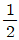
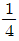
- 2
- 4
(정답률: 72%)
7. 카를 최상층에 정지시켜 놓은 상태에서 카 꼭대기 틈새(Top Clearance)를 측정한 것 중 옳은 것은?
- 카 상부의 가이드 슈와 승강로 천장부와의 수평거리
- 카 상부체대와 승강로 천장부와의 수직거리
- 카 상부의 가장 높은 구조물과 승강로 천장부와의 수직거리
- 최종 리미트스위치와 승강로 천장부와의 수평거리
(정답률: 58%)
8. 엘리베이터의 배열에 관한 설명으로 옳지 않은 것은?
- 3대의 그룹에 있어서는 일렬로 나란하게 배치하는 것이 바람직하다.
- 4대의 그룹에 있어서는 일렬로 나란하게 배치하는 것이 바람직하다.
- 6대의 그룹에 있어서는 3대3으로 된 배열이 이상적이다.
- 8대의 그룹에 있어서는 4대 4로 된 배열이 이상적이다.
(정답률: 77%)
9. 엘리베이터 기계실의 실온은 원칙적으로 몇 [℃] 이하를 유지하여야 하는가?
- 25℃
- 30℃
- 40℃
- 50℃
(정답률: 74%)
10. 다음 ( ㉮ ), ( ㉯ )에 들어갈 내용으로 알맞은 것은?
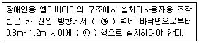
- ㉮ 우측, ㉯ 가로
- ㉮ 우측, ㉯ 세로
- ㉮ 좌측, ㉯ 가로
- ㉮ 좌측, ㉯ 세로
(정답률: 66%)
11. 엘리베이터의 신호장치 중 홀랜턴(hall lantern)이란?
- 케이지의 올라감과 내려감을 나타내는 방향등
- 케이지의 현재 위치의 층을 나타내는 표시등
- 엘리베이터가 정상 운행중임을 나타내는 표시등
- 엘리베이터가 고장중임을 나타내는 표시등
(정답률: 74%)
12. 비상정지장치가 작동된 상태에서 카 바닥의 수평도는 어느 부분에서나 얼마 이내이어야 하는가?(관련 규정 개정전 문제로 여기서는 기존 정답인 3번을 누르면 정답처리됩니다. 자세한 내용은 해설을 참고하세요.)
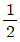
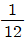
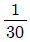
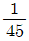
(정답률: 76%)
13. 승강로 피트에 출입구를 설치할 수 있는 피트 깊이는?(관련 규정 개정전 문제로 여기서는 기존 정답인 4번을 누르면 정답 처리됩니다. 자세한 내용은 해설을 참고하세요.)
- 1.8m 초과
- 2.0m 초과
- 2.5m 초과
- 3.0m 초과
(정답률: 55%)
14. 비상용 엘리베이터에 대한 설명 중 옳지 않은 것은?
- 예비전원은 정전시 60초 이내에 엘리베이터 운행에 필요한 전력용량을 자동적으로 발생시켜야 한다.
- 정전시 예비전원에 의하여 2시간 이상 작동되어야 한다.
- 엘리베이터의 운행속도는 45m/min 이상이어야 한다.
- 카 내에는 중앙관리실 또는 경비실 등과 연락할 수 있는 통화장치를 설치하여야 한다.
(정답률: 74%)
15. 승강기의 종류별 용도 중 화물용에 속하지 않는 것은?
- 화물용 엘리베이터
- 자동차용 엘리베이터
- 덤웨이터
- 침대용 엘리베이터
(정답률: 68%)
16. 설계도면상 적재하중 2000kgf, 카 자체하중 3500kgf, 승강행정 25m, 로프 무게는 1m당 1kgf의 로프가 6본 걸려있을 경우 균형추의 오버밸런스율이 40%라면 최상층에서 무부하 하강시 견인비는 약 얼마인가?
- 0.786
- 0.851
- 1.228
- 1.271
(정답률: 35%)
17. 다음 중 조속기에 대한 설명으로 가장 알맞은 것은?
- 카의 속도가 정격의 1.3배를 초과하지 않는 범위에서 과속스위치가 동작하여 전원을 끊고 브레이크로 제동하고 상승, 하강 양방향 모두 유효하여야 한다.
- 카의 속도가 정격의 1.45배를 초과하지 않는 범위에서 과속스위치가 동작하여 전원을 끊고 브레이크로 제동하고 상승, 하강 양방향 모두 유효하여야 한다.
- 카의 속도가 정격의 1.3배를 초과하지 않는 범위에서 조속기 로프를 기계적으로 잡아 비상정지 장치로 제동하고 상승, 하강 양방향 모두 유효하여야 한다.
- 카의 속도가 정격의 1.45배를 초과하지 않는 범위에서 조속기 로프를 기계적으로 잡아 비상정지 장치로 제동하고 상승, 하강 양방향 모두 유효하여야 한다.
(정답률: 46%)
18. 균형로프(Compensation Rope)에 대한 설명 중 옳은 것은?
- 주로프를 보강하기 위하여 설치한다.
- 균형추의 무게를 줄이기 위하여 설치한다.
- 트랙션비를 개선하기 위하여 설치한다.
- 카의 무게를 가볍게 하기 위하여 설치한다.
(정답률: 75%)
19. 2006년 10월 1일 건축허가 받은 건물에 기계실 없는 엘리베이터를 설치할 때 승강장 문의 유효 출입구 폭이 카 출입구의 폭보다 양쪽 모두 몇 [mm] 이상 크지 않아야 하는가?
- 30mm
- 40mm
- 50mm
- 60mm
(정답률: 44%)
20. 유압식 엘리베이터에서 작동유의 압력맥동을 흡수하여 진동, 소음을 감소시키는 역할을 하는 것은?
- 체크밸브
- 필터
- 사이렌서
- 스트레이너
(정답률: 79%)
2과목: 승강기 설계
21. 백화점에 엘리베이터와 에스컬레이터를 설치할 때 에스컬레이터의 수송분담률은 엘리베이터와 에스컬레이터 이용자 수의 몇 [%]가 적당한가?
- 20~30%
- 40~50%
- 60~70%
- 80~90%
(정답률: 67%)
22. 전원 공급측 전압이 220V, 수전측 전압이 215V인 선로의 전압강하율은 약 몇 [%]인가?
- 2.0%
- 2.3%
- 2.5%
- 5.0%
(정답률: 62%)
23. 기어의 이(teeth)줄이 나선인 원통형 기어에 해당 되는 것은?
- 스퍼기어
- 헬리컬기어
- 내접기어
- 베벨기어
(정답률: 58%)
24. 기계대의 강도 계산에 필요한 하중에서 환산 동하중으로 계산되지 않는 것은?
- 카 자중
- 로프 자중
- 균형추 자중
- 권상기 자중
(정답률: 58%)
25. 로프식엘리베이터의 속도별 꼭대기틈새 기준으로 옳지 않은 것은?
- 45m/min : 1.2m 이상
- 60m/min : 1.4m 이상
- 90m/min : 1.9m 이상
- 180m/min : 2.3m 이상
(정답률: 50%)
26. 다음 중 스프링 완충기의 설계에 대한 사항으로 옳지 않은 것은?
- 카측 완충기의 적용중량은 카 자중과 정격하중을 합한 무게의 2배를 기준으로 한다.
- 균현추측의 완충기의 적용중량은 균형추 자중의 2배를 기준으로 한다.
- 스프링간 접촉된 부분이 없이 충격하중 상태에서 적용중량의 2배를 기준으로 한다.
- 정격속도가 30m/min인 엘리베이터인 경우 스프링 완충기의 최소행정은 38mm으로 설계된다.
(정답률: 38%)
27. 정격하중 1000kgf, 속도 90m/min, 균형추 밸런스율 50%, 감속기 효율 60%, 승강로 효율 90%의 엘리베이터에 적절한 전동기의 용량으로 다음 중 알맞은 것은?
- 7.5kW
- 11kW
- 15kW
- 22kW
(정답률: 28%)
28. 엘리베이터용 전동기가 갖추어야 할 조건으로 적당하지 않은 것은?
- 기동토크가 클 것
- 기동전류가 클 것
- 소음이 적을 것
- 회전부의 관성모멘트가 적을 것
(정답률: 66%)
29. 다음은 로프 가드를 설치할 경우 홈(groove) 깊이에 대한 그림이다. 그림에서 C의 기준으로 알맞은 것은?
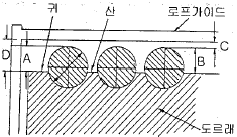
- C ≤ 2mm
- C ≤ 3mm
- C ≤ 4mm
- C ≤ 5mm
(정답률: 52%)
30. 권상기 도르래와 로프의 미끄러짐 관계의 설명으로 옳은 것은?
- 권부각이 작을수록 미끄러지기 어렵다.
- 카의 가감속도가 클수록 미끄러지기 어렵다.
- 카측의 균형추측에 걸리는 중량비가 클수록 미끄러지기 어렵다.
- 로프와 도르래사이의 마찰계수가 클수록 미끄러지기 어렵다.
(정답률: 74%)
31. 승강기의 주요안전부품에 대하여 설치·제조에 적합함을 확인하기 위하여 부품검사를 실시하여야 하는데 다음 중 이에 포함되지 않는 것은?
- 와이어로프소켓
- 제어반
- 전자브레이크
- 스텝
(정답률: 50%)
32. 직류 엘리베이터에서 동력전원설비인 변압기 용량은 PT≧√3×E×I×N×Y×10-3+(Pc×N)으로 설계된다. 여기서 정격전류 I[A]에 대한 설명으로 알맞은 것은? (단, PT는 변압기용량[kVA], E는 정격전압[V], N은 엘리베이터 대수[대], Y는 부등률, Pc는 제어용 전력[kVA]이다.
- 정격속도로 전부하 상승시의 배전선에 흐르는 전류
- 정격속도로 전부하 하강시의 배전선에 흐르는 전류
- 정격속도로 무부하 상승시의 배전선에 흐르는 전류
- 정격속도로 무부하 하강시의 배전선에 흐르는 전류
(정답률: 55%)
33. 다음 중 에스컬레이터의 일반구조로 적합하지 않은 것은?
- 사람 또는 물건이 에스컬레이터의 각 부분에 끼이거나 부딪히는 일이 없도록 할 것
- 경사도는 일반적으로 30°이하로 할 것
- 디딤판의 정격속도는 50m/min이하로 할 것
- 디딤판과 손잡이는 동일 속도로 할 것
(정답률: 64%)
34. 가이드레일에 걸리는 하중이 450kgf, 레일브래킷의 간격이 225cm, 레일의 단편 2차모멘트가 50.4cm4, 레일의 영률이 2.1X106kgf/cm2일 때, 가이드 레일의 휨은 약 몇 [cm]인가?
- 0.45
- 0.55
- 0.65
- 0.75
(정답률: 21%)
35. 정전시 카내 예비조명장치의 조도는 기준에 따라 측정할 경우 몇 [Lux] 이상을 확보할 수 있어야 하는가?(관련 규정 개정전 문제로 여기서는 기존 정답인 2번을 누르면 정답 처리 됩니다. 자세한 내용은 해설을 참고하세요.)
- 0.5:Lux
- 1.0Lux
- 50Lux
- 100Lux
(정답률: 69%)
36. 엘리베이터의 주행시간을 이루는 요소가 아닌 것은?
- 가속시간
- 감속시간
- 슬립시 정지시간
- 전속주행시간
(정답률: 74%)
37. 가이드 레일의 허용응력은 일반적으로 몇 [kgf/cm2]를 원칙으로 하는가?
- 600kgf/cm2
- 2400kgf/cm2
- 4100kgf/cm2
- 8000kgf/cm2
(정답률: 70%)
38. 엘리베이터용 도어에서 문닫힘 동작시에 사람 또는 물건이 끼일 때 무이 반전하여 열리도록 하는 장치가 아닌 것은?
- 스프링 클로저
- 세이프티슈
- 광전장치
- 초음파장치
(정답률: 71%)
39. 화이널리미트스위치(Final Limit Switch)에 대한 설명으로 옳지 않은 것은?
- 스위치는 기게적 조작이외에 광학적 또는 전자적으로도 조작될 수 있어야 한다.
- 가급적 리미트스위치에 의하여 착상되면 작동하지 않도록 설정되어야 한다.
- 완충기에 충돌되기 전에 작동하여야 한다.
- 카 또는 균형추가 완전히 압축된 완충기 위에 얹히기까지 작동을 계속하여야 한다.
(정답률: 47%)
40. 엘리베이터의 정격하중이 1000kgf, 정격속도가 150m/min일 때, 이론적 종합효율은 약 [%]인가?(단, 모터는 15kW를 사용하는 것으로 하고 오버밸런스율은 50%이다.)
- 65.3%
- 69.8%
- 75.4%
- 81.7%
(정답률: 35%)
3과목: 일반기계공학
41. 평벨트 전동장치에 대한 설명 중 옳은 것은?
- 벨트와 풀리의 접촉각이 증가하여 전동 동력은 감소한다.
- 가죽 벨트는 탄성이 풍부하고 마찰계수 및 방열성이 커서 장시간 연속운전이 가능하지만 긴 벨트는 이어서 사용하지 못한다.
- 바로걸기에서 벨트를 수평으로 걸어서 전동하는 경우 긴장측을 위로하는 것이 좋다.
- 벨트 전동장치는 기어 전동장치보다 정확한 회전비를 얻을 수 없다.
(정답률: 57%)
42. 주철에 관한 설명 중 틀린 것은?
- 주철은 인장강도보다 압축강도가 크다.
- 합금주철을 열처리하여 단조한 주철을 가단주철이라 한다.
- 표면을 백선화한 주철을 칠드주철이라고 한다.
- 구상흑연주철을 노듈러주철 또는 덕타일주철이라고도 한다.
(정답률: 52%)
43. 모듈이 5이고, 잇수가 각각 20과 36인 한 쌍의 표준 스퍼기어를 두 축에 설치하는 경우에 축간 거리는?
- 80 mm
- 100 mm
- 120 mm
- 140 mm
(정답률: 57%)
44. 비절삭 가공에 속하는 것은?
- 전조
- 호닝
- 선삭
- 연삭
(정답률: 65%)
45. 강 구조물 용접부의 비파괴 검사법 중 가장 일반적이며 필름에 감광시켜 결함을 찾아내는 것은?
- 초음파 검사법
- 방사선 투과 검사법
- 염색 침투법
- 자분 탐상 검사법
(정답률: 64%)
46. 유압기기에서 기어펌프를 사용시 특징 설명으로 틀린 것은?
- 구조가 간단하다.
- 토출량을 가변적으로 사용하기 편리하다.
- 내부 누설이 다른 펌프와 비교하여 크다.
- 다른 유압펌프에 비해 먼지에 가장 예민하다.
(정답률: 46%)
47. 드릴 구멍에 암나사를 깎는데 사용하는 수공구는?
- 렌치
- 탭
- 리머
- 다이스
(정답률: 71%)
48. 다음과 같은 테이퍼(taper)를 복식 공구대를 이용하여 절삭가공할 수 있는 공작기계는?
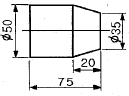
- 선반
- 밀링
- 프레스
- 슈퍼 피니싱
(정답률: 67%)
49. 회전축의 전달동력이 3 kW인 축에 300 rpm이 작동한다면 비틀림 모멘트는 약 몇 N·cm인가?
- 95.5
- 9550
- 955
- 9.55
(정답률: 24%)
50. 강의 표면처리에서 표면에 알루미늄을 침투시켜 내스케일성과 고온산화 방지 등을 목적으로 사용하는 표면처리방법은?
- 크로마이징
- 실리코나이징
- 보로나이징
- 칼로라이징
(정답률: 58%)
51. 길이가 2m이고 지름이 25cm인 단순 지지보의 중앙에 집중하중 400N이 작용하면 최대 굽힘 응력은 약 몇 kPa인가?(오류 신고가 접수된 문제입니다. 반드시 정답과 해설을 확인하시기 바랍니다.)
- 65.22
- 100.38
- 117.22
- 130.38
(정답률: 21%)
52. 인장강도가 48N/mm2인 기계 구조용강을 안전율 8로 하면 허용 인장응력은 몇 N/mm2인가?
- 6
- 56
- 288
- 384
(정답률: 53%)
53. 유체속도가 20m/s로 흐를 때 속도수두는 약 몇 m인가?
- 20.4
- 40.8
- 51.0
- 102.0
(정답률: 48%)
54. 목형에서 코어(core)를 사용해야하는 주물로 적합한 것은?
- 속이 빈 주물
- 크기가 작은 주물
- 크기가 큰 주물
- 외형이 복잡한 주물
(정답률: 78%)
55. 기계에 작동하는 기체를 저압식과 고압식으로 나눌 때 고압식에 포함되는 것으로만 이루어져 있는 것은?
- 진공펌프, 회전형 압축기
- 원심 압축기, 팬
- 축류 송풍기, 왕복형 압축기
- 압축공기 기계, 송풍기
(정답률: 68%)
56. 탄소강을 가열하여 오스테나이트 조직으로 하고, 이것을 급냉(수냉)하여 마텐자이트 조직으로 바꾸어 경도를 높게하는 열처리는?
- 담금질
- 뜨임
- 풀림
- 불림
(정답률: 61%)
57. 코일 스프링에서 코일의 평균 지름을 D(mm), 소선의 지름을 d(mm)라 할 때 스프링 지수는?
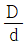
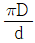
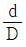
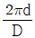
(정답률: 72%)
58. 내압을 받는 얇은 원통형 관에서 축방향 응력이 σ1, 원주방향 응력이 σ2라고 하면 맞는 것은?
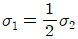
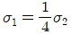
- σ1=σ2
- σ1=2σ2
(정답률: 53%)
59. 오일리스 베어링에 대한 설명 중 틀린 것은?
- 발전기 등의 부시에 널리 쓰이고 있다.
- 주유가 곤란한 부분에 사용된다.
- 항상 윤활유를 공급해야 한다.
- 회전시에는 베어링 메탈에서 윤활유가 나온다.
(정답률: 74%)
60. 해수에 대해서는 백금과 같이 내식성이 우수하고, 특히 염산, 황산, 초산에 대한 저항이 크며, 비중은 4.51로 가벼우나 비강도는 금속 중에 가장 큰 금속은?
- AI
- Ni
- Zn
- Ti
(정답률: 71%)
4과목: 전기제어공학
61. 입력신호 x(t)와 출력신호 y(t)의 관계가
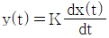
로 표현되는 것을 어떤 요소라 하는가?- 비례요소
- 미분요소
- 적분요소
- 지연요소
(정답률: 52%)
62. 그림에서 단자전압 Vab는 몇 [V]인가?
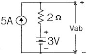
- 3V
- 7V
- 10V
- 13V
(정답률: 48%)
63. 추치제어에 속하는 제어계는?
- 전동기의 레너드제어
- SCR 전원장치
- 발전소의 주파수제어
- 미사일 유도제어
(정답률: 67%)
64. 직류기에서 전압정류의 역할을 하는 것은?
- 탄소브러시
- 보상권선
- 리액턴스 코일
- 보극
(정답률: 65%)
65. 그링믄 노즐 플래퍼의 동작상태를 나타낸 것이다. 노즐 플래퍼의 특성 곡선으로 알맞은 것은? (단, 노즐 플래퍼의 간격은 δ, 노즐의 배압은 P이다.)
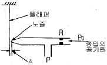
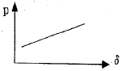
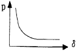
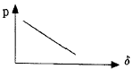
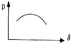
(정답률: 61%)
66. 그림과 같은 계전기 접점회로의 논리식은?
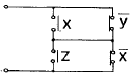
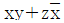
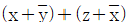
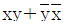
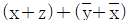
(정답률: 63%)
67. 다음 설명은 어느 자성체를 표현한 것인가?
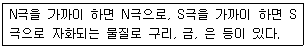
- 강 자성체
- 상 자성체
- 반 자성체
- 초강 자성체
(정답률: 64%)
68. 대부분의 시간 지연은 시스템의 무엇 때문에 발생하는가?
- 전파 지연
- 정밀도
- 전달함수
- 오버슈트
(정답률: 55%)
69. 콘덴서의 정전용량을 변화시켜서 발진기의 주파수를 1kHz로 하고자 한다. 이 때 발진기는 자동제어 용어 중 어느 것에 해당 되는가?
- 목표값
- 조작량
- 제어량
- 제어대상
(정답률: 45%)
70. 어떤 회로의 유효전력이 80W, 무효전력이 60Var이면 역률은 몇 [%]인가?
- 20%
- 60%
- 80%
- 100%
(정답률: 64%)
71. 열기전력형 센서에 대한 설명이 아닌 것은?
- 전압 변화용 센서이다.
- 철, 콘스탄탄의 금속을 이용한다.
- 지벡효과(Seebeck effect)를 이용한다.
- 진동 주파수는
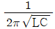
이다.
(정답률: 44%)
72. 방 안의 온도를 배출열양의 제어가 가능한 히터로 제어하고자 한다. 이러한 제어계를 간단하게 블록선도로 그리면 다음과 같이 되는데 이 때 A지점에 들어갈 가장 적당한 것은?
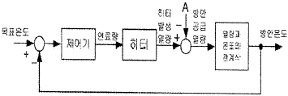
- 외부온도
- 외부에 빼앗긴 열량
- 조작량
- 온도오차
(정답률: 59%)
73. 온도를 임피던스로 변환시키는 요소는?
- 측온 저항
- 광전지
- 광전 다이오드
- 전자석
(정답률: 64%)
74. 단상반파정류로 직류전압 100V를 얻으려고 한다. 최대 역전압(Peak Inverse Voltage:PIV)이 약 몇 [V] 이상인 다이오드를 사용하여야 하는가?
- 100V
- 141V
- 222V
- 314V
(정답률: 28%)
75. 입력이 011(2)일 때, 출력은 3V인 컴퓨터 제어의 D/A변환기에서 입력을 101(2)로 하였을 때 출력은 몇 [V]인가?(단, 3bit 디지털 입력이 011(2)은 off, on, on을 뜻하고 입력과 출력은 비례한다.)
- 3V
- 4V
- 5V
- 6V
(정답률: 53%)
76. 단상유도전동기에서 기동토크의 순서가 옳은 것은?
- 반발기동형 ＜ 반팔유도형 ＜ 콘덴서전동기 ＜ 분상기동형 ＜ 세이딩코일형
- 세이딩코일형 ＜ 분상기동형 ＜ 콘덴서전동기 ＜ 반발유동형 ＜ 반발기동형
- 반발유도형 ＜ 반발기동형 ＜ 콘덴서전동기 ＜ 세이딩코일형 ＜ 분상기동형
- 분상기동형 ＜ 세이딩코일형 ＜ 콘덴서전동기 ＜ 반발기동형 ＜ 반발유도형
(정답률: 50%)
77. 다음 중 옴의 법칙에 대한 설명으로 옳지 않은 것은?
- 저항에 전류가 흐를 때, 전압, 전류, 저항의 관계를 설명해 준다.
- 옴의 법칙은 저항으로 전류의 크기를 조절 할 수 있음을 보여준다.
- 옴의 법칙은 저항에 의한 전압강하를 설명해 준다.
- 옴의 법칙을 이용하여 임피던스에 의한 전압강하는 설명할 수 없다.
(정답률: 70%)
78. 그림은 릴레이 접점에 의하여 자기유지회로를 구성한 것이다. 이를 논리게이트 회로로 그릴 때 옳은 것은?
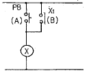
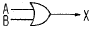
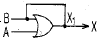
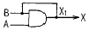
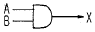
(정답률: 54%)
79. 다음 중 엘리베이터에 적용하는 유도전동기에 인가되는 전압과 주파수를 동시에 변환시키는 제어방식은?
- 교류1단 속도제어방식
- 교류2단 속도제어방식
- VVVF 제어방식
- 교류 궤환제어방식
(정답률: 70%)
80. 유입식 변압기의 절연유 구비조건이 아닌 것은?
- 절연내력이 클 것
- 응고점이 높을 것
- 점도가 낮고 냉각효과가 클 것
- 인화점이 높을 것
(정답률: 45%)